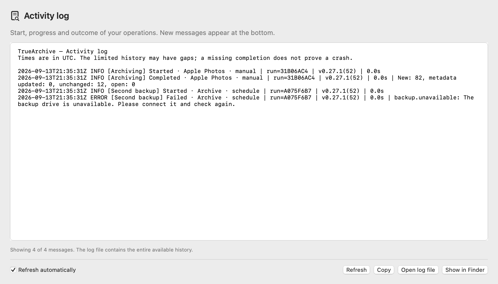

Handbook for Alpha 0.40.0. Some illustrations show an earlier interface.
The TrueArchive handbook.
Your archive destination and sources in one workspace. Archive a single source or all connected sources directly.
The app’s “?” buttons open the relevant chapter directly. Further down, you will find the release notes and earlier versions.
Alpha 0.40.0 · Build 74 · 18 September 2026.
Installation
Alpha 0.40.0 / Build 74 is available. Archive cards one item at a time, connect more Apple Photos accounts and configure schedules or optional space freeing directly at each source. Update every Mac that writes to the same archive before using the new metadata features. Download.
You need a Mac with macOS 15 or later. A single package is intended for Intel and Apple Silicon. Check the release notes for your version’s testing status.
Download the current alpha from the website and install it as follows:
- Finish any running imports. Close the older TrueArchive app before updating.
- Extract the downloaded app package. Move
TrueArchive.appto the Applications folder. - Open the app. On first launch, the normal interface opens with guidance on connecting sources and an archive.
No signup is needed for the alpha. Share your feedback after trying it.
This alpha is not notarized by Apple. macOS may therefore require additional approval when you first open it. Use the unmodified package from the website and check that its version matches.
macOS blocks the first launch
If macOS cannot verify the developer or check the app for malicious software, Apple describes these steps for apps whose origin you trust:
- Try opening TrueArchive from Applications, then close the warning.
- Open System Settings → Privacy & Security. Scroll to the Security section.
- For TrueArchive, click “Open Anyway” and then confirm with “Open”.
This exception applies to the app. If you see a message about a damaged app or detected malware, or if the approval option is missing, send us the exact wording. Do not disable your Mac’s protection across the board. Apple’s explanation of first launch.
Read the Release Notes for your app package. You will also find a link to the matching checksum there.
Shared preview: Starting with 0.39, enable “Receive verified preview versions” under App Updates on both Macs to receive the same centrally verified package. Without this option you receive released versions. The installed version and build number appear alongside the setting. Turning previews off does not downgrade the app. An offline Mac updates after reconnecting and once archive work is safely idle.
App updates
In an upcoming version: App Updates lets you schedule a check for after archiving finishes and cancel that request. After an update, each user account shows whether the new app and Photos Access are ready. “Check access services again” repeats that check. Grant any missing Photos permission in the affected Mac user. “Ready” confirms the service, not a complete archive of all photos.
Shared Mac updates: TrueArchive coordinates updates across signed-in Mac users. New archive jobs wait while existing or paused transfers finish. Previously active Photos Access apps restart in their original sessions after the verified replacement. Disabled access stays disabled; pairings and settings are preserved.
Use the shared app in Applications. Older TrueArchive and Photos Access versions must be closed normally once. “App updates” identifies the session that needs attention; choose “Prepare installation again” afterwards. An update that ended in an uncertain state requires a normal Mac restart. TrueArchive then verifies the installed package before resuming work. Photos permission remains your choice.
Alpha 0.40.0 is also available through the update channel. Choose TrueArchive → Check for updates … from the menu. Let any import finish first; installation waits while archive work is pending. Alternatively, install the package from the website. Your saved sources and archive are preserved.
From version 0.6.0, automatic app updates are enabled by default. TrueArchive checks roughly once a day while the app is running and the Mac is awake. A new, verified package is installed when idle; the app then restarts.
Updates wait during checking, importing, pauses or keyword tagging. An unfinished setup or open import preview also prevents an automatic restart. This includes a retained preview in a source section that is currently collapsed. No new archive jobs start during an update.
Under TrueArchive → Settings → App updates you can turn off automatic updates. “Check for updates now” remains available for manual updates. You can also use the TrueArchive menu; “App updates …” in the menu bar window opens the setting.
The app’s update mode control is locked during an update. Selecting automatic updates in the update dialog applies to future updates; it does not cancel an update that has already been prepared. If the connection fails or installation encounters an error, you can check again later.
One-time upgrade from 0.5.0 and earlier: Install the first version with the updater manually from the website’s package. Older apps cannot download this feature themselves. The package signature confirms the update’s origin; the pilot is still not notarized by Apple.
Do not downgrade to 0.7.x: Once Alpha 0.8.0 saves the local setup in the new schema 2, versions 0.7.x deliberately cannot read those settings. This prevents a limited Photos sync from accidentally running without a limit. The archive format and files already archived remain unchanged.
Local settings from 0.13.0: The new source type is saved using settings schema 3. Older apps intentionally cannot load these settings. Existing sources and your chosen Photos date range are preserved when upgrading from schema 1 or 2.
Optional Local Metadata Index
Optional in Alpha 0.38.0. Open TrueArchive → Settings → Performance and enable “Use Local Metadata Index”. The option is off by default and applies to verified XMP associations from all sources on this Mac.
During archiving, TrueArchive remembers derived metadata on the Mac. Subsequent checks can interpret the same XMP associations faster, including after restarting the app. Complete XMPs are still read and changes checked. Downloads, copying and full original verification remain necessary; the benefit depends on the archive and operation.
The index contains no images. Its database is limited to 64 MiB and 25,000 entries. Originals and XMPs in the archive remain authoritative. If the index cannot be used, normal verification continues. “Clear Local Index” removes it; while enabled, it rebuilds during the next check. Disabling the option retains existing cache files but stops using them.
Changing and clearing the index are disabled during archive work. It is local to each macOS user, is not synced between Macs, and is not part of the archive or its backup.
Choose language
Under TrueArchive → Settings → General → Sprache / Language choose System, Deutsch or English. With “System”, TrueArchive uses the first supported language in your preferred system languages. If neither German nor English is listed, it uses English. Your explicit choice stays saved on this Mac.
Navigation, settings and the last all-source sync summary change immediately. Existing individual error messages keep their language until the next action. System dialog controls and update dialogs use the language selected by macOS. Changing language does not restart ongoing archive work. Your source names, filenames, paths and archived metadata remain unchanged. The automatic keyword language has its own selection in each source’s settings (in archive settings through 0.17.3); imported metadata is not translated.
The website initially follows your preferred browser languages, with English as the fallback. Use DE / ENG at the bottom of any page to switch. Your choice stays saved if the browser permits it. The language links also work without JavaScript. Use the browser language automatically again.
Your first archive
- Connect an archive. At “Archive destination” at the top, choose a new empty archive folder, your existing TrueArchive archive or directly use an existing picture folder. The destination requires APFS or HFS+.
- Add a source. Use “Add source” to connect Apple Photos, an SD card, an external drive, local picture folders, a Google Takeout export or an Immich account. Connection and settings open in the same workspace.
- Review the scope and start. Check the source folder and subfolder option, or the capture date range. “Archive” next to a local source or Apple Photos starts directly; “Archive all connected” starts the combined run. For Immich, select and check the uploads you want first.
Short hints in the workspace show what is still missing. Once at least one source is connected and the archive has been checked, TrueArchive remembers the setup. Completing setup does not start an import. Sources, the archive and an optional Photos capture date range stay saved on this Mac. Enable schedules and automatic keywords separately.
The direction is always source → archive. Importing reads from sources. Only separately confirmed optional space freeing may subsequently remove verified source files permanently. Even if you later delete a file there yourself, its archive copy remains.
Use an existing picture folder as the archive
Use an existing folder: Choose your existing picture folder as the destination and use it directly. Registering the entire collection is not required.
- Choose the archive folder. Open “Archive & maintenance” at the top and select your existing folder on a supported APFS or HFS+ drive. That exact folder becomes the archive.
- Import new pictures. Start a sync for the selected source or all connected sources. New media and their XMP files are placed under year → month → day.
Connecting preserves existing media and XMP files in place. It neither reads all pictures nor adds missing XMP files throughout the old collection. TrueArchive creates only its small control files in the hidden .bildarchiv folder; no additional database or persistent verification cache is needed.
What does an import compare? TrueArchive checks the relevant destination folders and protects existing files from overwrites. Previously associated files there can be recognized. Pictures with different names, locations or changed capture dates may be copied again, including pictures previously archived with TrueArchive. Unclear metadata associations are not resolved by overwriting them.
For a comparison of the entire collection, deliberately start “Check duplicates” later. This separate check can take longer and is not a prerequisite for importing. Connecting a folder does not prove that all previously stored files are complete or undamaged.
If 0.17.0 already started registration: Previously added XMP files remain. A provable pending write is first completed safely, then the folder can be used directly. The remaining collection is not automatically registered. Ambiguous or damaged transaction evidence is preserved and must be resolved.
Other interrupted imports: TrueArchive shows the pending operation. The required evidence is checked only when you start recovery. For older archive formats, this explicit check may cover the entire collection and take longer. Files are not changed without valid evidence.
File packages stay closed during connection and ordinary imports. Photo libraries, applications and other Finder packages remain unchanged. A package itself cannot be the archive destination. Existing folders are not automatically reorganized.
One workspace for archiving

The shared archive destination appears at the top in a blue area with the photo-on-drive symbol. It shows the full drive and folder names, connection status and last known free space. Blue identifies the shared destination. “Archive ready” means work can start; it does not confirm that every picture has been archived.
Directly below, Automation shows the next scheduled sync or the reason it is waiting. “Pause” prevents future automatic starts; “Resume” allows them again. This does not cancel a running operation. Manual archiving remains available. Configure schedules.
Each source has a fixed row showing its name, actual folder or capture date range, connection and result. “Archive” starts a configured local source or Apple Photos with one click while idle. It checks that source’s entire configured scope again. An open preview for that source is replaced; other sources keep their previews and reports. Immich “Select …” opens its deliberate upload selection.
Settings, preview and result open directly below the relevant source. One expanded section is shown at a time; its heading names the source and archive destination. Other sources remain in the same list. Closing collapses the section, without a chain of subpages. Use “Add source” to add more connections.
Source settings show What to archive?, When to archive? and Automatic keywords. Local options, schedules and keywords apply directly. Confirm each source’s date range with “Apply date range”. “Discard changes” or closing without applying discards the draft and keeps the saved range. Changes remain locked during archive work.
Start and end dates for each source
Open the source settings and choose “Capture date” → “Date range”. In Immich, expand the date range directly above the upload selection. “Apply date range” saves it for this source, including after restarting the app.
- “From” only: Include recordings from that day onward, including matching items added later. There is no end date.
- “To” only: Include recordings up to and including the entire end day, with no start boundary.
- Both boundaries: Include only the chosen range. Both calendar days are included in full.
- “All items”: No date filter. An end date before the start cannot be saved.
The saved range applies to previews, individual and combined imports, existing schedules and the review of the same configured drive. A start date alone does not create a schedule; enable one separately if needed. Google Takeout and Immich remain manual.
Local sources use embedded camera metadata, falling back to the file modification or creation date. Takeout uses the capture date in Google metadata, falling back to embedded camera metadata. Apple Photos and Immich use the recording’s capture date. Known instants use the saved timezone; camera clocks without a timezone keep their calendar day. Unassignable dates are excluded while filtering. The preview reports skipped files as information, not import failures.
Changing the range clears the old preview or Immich selection. While a changed draft is open, that source’s starts and combined runs wait; other sources remain available individually. Existing archive files are preserved. A matching Live Photo includes all of its associated components.
Settings from 0.22.0: Schema 6 preserves the new restrictions. Older apps intentionally cannot load these settings. Existing sources acquire no new date filter during migration, and the saved Apple Photos range is preserved.
Connection symbols and text explain the last checked state. Green means reachable, or full access for Apple Photos. It does not confirm a complete import or the availability of every iCloud original. Missing permissions, disconnected drives and unresolved issues have specific guidance.
The fixed work display names the operation, source actually being processed and trigger, such as “Manual” or “Automatic”. Known counts and progress appear with the supported pause and cancel actions. You can view results while work continues and queue additional local sources for later; this does not change the running job or its settings. After a specific confirmation, running keyword analysis can be interrupted for a requested archive action.
Time remaining from Alpha 0.29.0: The main window and menu bar show the same estimate. During ordinary imports, TrueArchive learns how long copying, metadata work and verification take with this source and archive drive. New files, metadata changes and existing files are distinguished. No calibration or settings are needed.
In Alpha 0.38.0, a rounded estimate such as “About 20 minutes remaining” replaces the previous ranges. While measurements vary too much, the display says “Time estimate not yet reliable”. Once measurements are sufficiently stable, an expected completion time is also shown. Verification and safe finalization are included; slower work can increase the estimate. “This step” refers only to the current phase. If other sources have an unknown amount of work, the estimate explicitly says “This source”.
A pause or Mac sleep is not learned as slow drive performance. Time stays unknown after a longer gap without progress. Photos batches and known waits are included; a library change causes recalculation. For Immich, preview time ends at your review decision; subsequent archiving has its own estimate. Independent keyword analysis and Immich preview generation are separate from import time.
“Recent results” opens the sources’ last reports from this app session. Successes and unresolved items appear together: “80 archived · 2 open” is a partial success. Expand issues to find the appropriate recheck, setting or support report. A new attempt replaces that source’s report; there is no persistent result history after restarting the app yet.
“Archive & maintenance” expands the destination connection and existing maintenance actions in place: archive status, recovery when an interrupted operation is found, duplicate checking and keywords. Use “Change archive …”, or “Choose archive folder …” during first setup, to choose the intended folder. In the file picker, use “New Folder” and confirm with “Use as archive”. The chosen folder itself becomes the archive; the destination requires APFS or HFS+.
Finder actions open the actual archive or local source folder. Eligible external volumes also offer Eject, both at sources and at the archive destination. Safely disconnect drives. App settings, help and support are available through the labelled actions and the macOS menu.
“Destination change still pending”: The last selection could not be applied. Further imports remain blocked, even after restarting the app. Choose the intended destination again and wait for “Archive ready”. The previous folder is not silently reused.
Changing the archive invalidates existing previews. If you change “Include subfolders” for a source, check that source again; a different source’s selection remains. You also create a fresh preview after restarting the app.
Archive all connected
When idle, “Archive all connected” starts a manual combined run with one click: configured local sources in their listed order, including Takeout, followed by Apple Photos. Each folder uses its subfolder option; Apple Photos uses the confirmed capture date range. Without a date filter, all accessible items are synced.
Immich stays separate: The round result marks these accounts as “selection required”. Choose “Select …” at the intended Immich source to check its uploads and then archive them. The combined button does not import a previously prepared Immich selection either.
Open previews for local sources and Apple Photos are replaced. The button checks their entire configured scope again and imports new or changed content. Previous partial selections do not limit this run. For a specific selection, open the preview directly at the individual source instead.
The source list shows the active source and the sources that follow. Double clicks do not create a second combined run. You can queue additional local sources as separate one-time jobs for later; this does not change the running combined run’s order or settings. Each source’s result opens directly at its row. New and existing content, supplemented metadata, variants and unresolved cases stay together. Missing sources are skipped with a reason; other sources can continue. The run stops if the archive is unsafe or the setup changes.
Pause local work with “Pause” and continue it with “Resume”. “Cancel sync” ends the entire run; later sources will not start. Apple Photos supports cancellation but does not yet support pausing. Files already archived are kept and recognized on the next run.
Your schedules and their global pause remain unchanged. Apple Photos must already have full access. Running archive work and app updates prevent a second simultaneous run.
Quick actions in the menu bar

Click the TrueArchive drive in the macOS menu bar. The compact window shows the same archive destination and, directly below it, the same automation state as the main window. “Open” brings the existing app window to the front.
When idle, it offers “Archive all connected” and up to three eligible local sources or Apple Photos with “Archive”. Their order matches the workspace. “More sources …” opens that list in the main window. For Immich, “Select …” opens the relevant selection directly.
During an operation, its controls replace quick starts. The source, trigger and known progress match the main window. Apple Photos and Immich support cancellation but not pausing. A pause is confirmed only when the worker has paused; cancellation remains in progress until it has actually stopped.
“View result …” opens an unresolved source report in the right place. If the archive is missing, “Archive & maintenance …” opens its connection controls. Settings, Finder and support remain accessible. Quitting waits for active work to stop safely. Opening the menu starts no sync and changes no scheduled time.
Free up space on a source
Off by default. Defaults: at least 20 % free, oldest captures first, a second backup required and favorites protected. Review the proposed files before first use with your own source.
Open “Free up space” directly at a source. Archiving continues to read from the source. This separate, optional operation may permanently delete already archived source files after your confirmation. The archive copies remain.
Choose the source and target
Supported sources are local SD cards, external drives and explicitly selected media folders. Source and archive must be on verified independent physical devices; a different partition on the same drive is not enough. The required second backup must also be independent. Archive and backup folders, as well as overlapping sources, are excluded.
Apple Photos, Immich, Google Takeout and Lightroom exports show an explanation in this tab. No source files are deleted there. Network folders, cloud sync folders, photo libraries and managed Immich folders are also excluded.
- Choose “Keep at least this much free”: 20, 40, 60 or 80 %, or a custom value from 5 to 90 %. Free space is measured for the entire drive. Only eligible files within the configured source scope may be removed.
- Choose the order: “Oldest captures” keeps newer captures for as long as possible; “Largest captures” frees space by removing fewer captures; “Oldest videos” leaves photos on the source. If there are not enough videos, the target remains unmet.
- Under “What is preserved?”, requiring a second backup and protecting favorites are enabled by default. Turning off the second backup requires a separate confirmation: the archive may then be the only remaining copy.
- If write access is missing, choose “Allow access…” and select exactly the same source folder again. “Connect archive”, “Set up second backup …” or “Back up now” lead to the required action when a prerequisite is missing.
Check and confirm what to free
“Check what can be freed” deletes nothing. Each bounded preview shows up to 128 capture groups with their associated files, date and estimated size. You can deselect groups. This selection applies only to manual removal. An already queued automatic operation waits while this preview is open. After you close it or switch tabs, the confirmed rules may also remove deselected captures. The red button states the estimated amount; the following specific confirmation authorizes permanent removal. For larger sources, further sections can be checked afterwards.
Before removal, the current original bytes, their source association, and all required metadata and companion files are verified in the archive. If a second backup is required, those exact current files are checked in a confirmed backup snapshot. A green import status or a previously successful backup alone is insufficient. Unclear groups, unknown companions and incompletely preserved metadata remain on the source; a RAW with an unresolved Nitro companion is not partially removed.
Captures without a reliable date and new or changed files remain protected; both the capture and its last modification must be at least 24 hours old. With favorite protection enabled, five-star captures and favorites are also preserved. Videos without a fully readable record of their ratings remain protected too. In this version, that includes MOV and MP4 videos because their embedded ratings cannot yet be checked completely. Choosing “Oldest videos” with the default favorite protection therefore cannot free space from these videos yet. If too few groups qualify, the view explains the unmet target and protection reasons. File size is an estimate; actual free space is measured again.
Automatic freeing, stopping and interruption
“Automatically free up space” first presents the specific rule for confirmation. Enabling it does not delete anything. The rule applies only after a future fully or partially successful import from this source. Cancelled imports, starting the app and simply connecting a drive do not trigger removal. If the second backup is missing, an already queued operation waits for a matching backup to finish; “Back up now” starts that backup explicitly. The import can end normally.
Later runs with the same confirmed rule do not ask again. Changing the target, order, protection rules or bound source, archive or backup connections revokes activation. Another Mac requires a new confirmation. Turning the option off prevents future operations. During a run, the tab shows its phase and progress; “Stop” waits for the current file to finish safely.
Freeing space does not use the Trash. Some source files may already be gone after cancellation; their verified archive copies remain. After an interrupted operation, explicitly choose “Resolve interrupted operation”. Remaining files are returned without overwriting anything. This does not resume deletion: a new check and confirmation are then required. The last completed result remains under “Last space freed”. To restore files, use the archive or the second backup.
Edit in Nitro, keep in the archive, view in Immich
Nitro creates the edit. TrueArchive preserves originals, finished versions and XMP. Immich displays the connected collection. Follow one example picture through the whole workflow:
- Finish the edit in Nitro: Keep the RAW and Nitro XMP together. Also export a JPEG or HEIC with the finished appearance, for example to Apple Photos. The XMP recipe alone does not apply the edit in Immich.
- Archive both paths: Import the SD card with its RAW and XMP, and sync Apple Photos separately. The finished version may arrive first. Check completion for both sources; similar names or the same subject do not automatically link RAW and JPEG.
- Check the example: Inspect its description, tags and stars. “Day unknown” is not an exact capture date. While TrueArchive is writing, avoid editing the same XMP files in another application.
- View in Immich: Connect the archive read-only in the correct account’s external library. After scanning, check the picture and its search results. “Scan requested” does not confirm completed metadata processing. Do not upload the archive files again to make them appear.
- Optionally add a heart for five stars: Enable the star rule and start “Back up now”. It applies only to exactly five standard XMP stars on the verified archive file in its bound owner account. A heart on the RAW does not carry over to a separate JPEG. Lower ratings never remove a heart; with five stars still present, a manually removed heart can return.
- Complete the second backup: Wait for a confirmed backup snapshot. A successful import, a picture visible in Immich and an accessible backup destination are separate results.
Enabling the star rule alone does not start a round. For regular rounds, also enable “Automatically back up Immich changes”. Supported Immich changes can be saved in XMP; this does not provide general automatic synchronisation of every XMP field in both directions.
Recover a file or an earlier edit
- Choose the time: Select a confirmed snapshot under Second backup. On a new Mac, the backup destination, backup password and, for Hetzner, storage credentials are sufficient; the old archive drive is not needed. Unconfirmed snapshots are only for explicitly chosen file rescue with unknown completeness.
- Select media and XMP: For one picture, select both files, such as
Example.ARWandExample.ARW.xmp, or their containing folder. Include a finished JPEG/HEIC separately if needed: it remains its own media file. - Restore separately: Use a separate empty destination folder, then check the file, metadata and edit there. Do not overwrite the existing archive in Finder. A recovered selection is not a fully restored archive.
- Try it in Nitro: Open copies of the RAW and XMP in a test folder. Nitro expects different sidecar names depending on format, so do not rename sidecars across the archive. Compare the recipe, crop and appearance; after saving again, also check third-party tags, regions and extra metadata.
- Restore Immich organisation if needed: Make the pictures available in the correct external library first, then deliberately choose “Restore in Immich…” for the supported information you want. Restoring files alone does not restore the Immich database, people or sharing links.
Verification limit: TrueArchive does not render the Nitro recipe. A complete open-and-save roundtrip in Nitro remains unverified. Automatically selecting media with its XMP is part of the proposed new backup dialog; always check that both files are selected before starting.
Second backup and restore
Since Alpha 0.28.0: “Archive & maintenance” now includes an encrypted backup on a separate physical drive. Snapshots also preserve earlier file versions.
- Choose Set up second backup … and an empty folder on a different APFS/HFS+ drive. Two volumes on the same physical drive are not an independent backup.
- Choose a password with at least twelve characters and store it safely outside this Mac. TrueArchive also saves a copy in the local keychain. The encrypted backup cannot be recovered without its password.
- Choose Back up now. Selecting the folder alone does not start a backup. TrueArchive checks the archive, saves its files and confirms the completed snapshot.
All regular archive files are included, including unassigned media and foreign XMP sidecars. Repair interrupted archive operations first. Unknown administrative files, links, package folders or nested mounted volumes prevent a confirmed completion. Close other metadata editors and older TrueArchive versions during backup. This is not an atomic filesystem snapshot.
Imports, keywords, Immich work, updates, ejection and quitting respect the shared operation lock. A requested import can stop the backup; the import begins after the backup process has fully ended. Previous confirmed snapshots are preserved. Old snapshots are not deleted automatically.

Set Up a Hetzner Storage Box
New in Alpha 0.38.0: Open Archive & Care → Set Up Second Backup… and choose Hetzner Storage Box. No terminal commands, personal keys or network-drive mounting are needed.
1. Create an Account and Order Storage
- Open Hetzner Accounts and choose Register now. Add your contact and billing information, confirm your email and supply the requested payment details. Complete any identity verification directly with Hetzner. Optionally enable two-factor authentication. Official account guide.
- Open a project in Hetzner Console, then choose Storage Boxes → Create Storage Box. Pick a location and capacity based on the space your archive uses, leaving room for new photos and older versions. Current capacities and prices.
- Enable External Reachability. Set a dedicated Storage Box password and keep it in your password manager. Once provisioned, copy the username, such as
u123456, or server address. Hetzner ordering guide.
Order a Storage Box. This connection is not for Cloud servers or Storage Share. TrueArchive does not need the extra “SSH Support” option; it uses the available file-transfer connection. Hetzner connections and settings.
2. Connect in TrueArchive
- Choose Hetzner Storage Box, enter the username or server address and Storage Box Password. Check Connection verifies access. It does not create a backup.
- Select New Backup. Choose a separate Backup Password of at least twelve characters, repeat it and confirm independent safekeeping. It encrypts photos and XMP files before upload. Neither the Hetzner account password nor the Box password replaces it.
- Choose Set Up Hetzner Backup, then Back Up Now. The default backup name is TrueArchive. For separate archives, expand “Use a Different Backup Name” and keep that name with your password. There is currently one configured backup destination per archive; changing it does not delete earlier backups.
The login and backup password are saved in this Mac’s Keychain. Keep an independent copy of the backup password. Resetting a password at Hetzner cannot decrypt the backup. If this name already holds a backup, choose Existing Backup and supply its current password.

3. Daily Use and Recovery on a New Mac
The first upload can take a long time depending on archive size and upload speed. Later backups transfer new and changed data while preserving older snapshots. Wait for Backup completed in full. Cancelling leaves the previous confirmed snapshot usable. Enable the daily schedule explicitly when wanted: TrueArchive must be open, the Mac awake, the archive connected and internet available.
For recovery, choose Restore Archive from Backup… → Hetzner Storage Box, enter the Box login and backup password, then Open Hetzner Snapshots. Use the same backup name if previously changed. Select a date and restore into a new empty local folder. The original drive and old Mac’s preferences are not required. First check a small selection together with its XMP files.
After changing the Box password, open Settings… → Verify and Save Login. For connection failures, check internet access and External Reachability. An unverified server identity blocks the connection. Storage usage and billing remain visible in Hetzner Console.
Links and commission: Hetzner’s current FAQ says the referral programme has ended. These are direct provider links; TrueArchive currently receives no commission. Checked 16 September 2026.
Optional daily backup
A new schedule starts at its next selected time. If the Mac is off then, that first missed run is caught up at the next opportunity. Older saved schedules without a start time catch up once at the next opportunity.
In Settings …, select the hour and choose Enable schedule on this Mac. One Mac owns the schedule; explicitly enabling it on another Mac transfers responsibility. TrueArchive must be open, the Mac awake and both drives connected. One missed run is caught up, without running once for every missed day. Turn off leaves manual backups available.
Restore a snapshot or individual files
The Overview, Restore and Settings sections keep your input, selection and scroll position when switching. Previously loaded folders reappear immediately; the first folder level is prepared when opening the connection. Back to folder start returns to the first page. Before a restore, TrueArchive verifies the selected snapshot and files again.
Restore → Restore archive from backup … works without the original archive or the old Mac’s configuration. Open the backup folder, enter its password and select a date. The selected snapshot shows its full ID. Confirmed snapshots have an encrypted completion record. An unconfirmed rescue snapshot needs explicit consent; its completeness is not established.
Choose Restore entire snapshot … or select files and choose Restore selection …. Folders include all their contents. For individual images, the matching filename.extension.xmp is included; review the combined selection in the preview. Choose a new empty folder outside the original archive and backup repository. Files appear in its Archiv subfolder and are verified before completion. Further catalogue and file pages have direct buttons; the folder path and Up one level keep navigation visible.

Resume interrupted restore … accepts only the unchanged destination owned by that operation. An unconfirmed crash during transfer requires a new empty folder. Keep rescued files and the adjacent restore record together, and do not edit them before resuming.
A confirmed full restore of a supported format offers Use as archive. Original media, XMP bytes and logical identities are retained; only the physical root binding may change. Unknown archive/XMP versions remain available as a file rescue. Automatic tasks start paused when the restored archive is connected; review the result before allowing them again. Existing sources and date ranges stay configured.
Check a backup and recover without the app
Check structure checks the repository’s structure. Read and verify all backup data also reads every stored data block. A structure check alone does not replace this full check. Neither action deletes snapshots or unlocks the repository automatically.
Standard restic 0.18.1 can recover files with the password independently of the old keychain. List data snapshots with snapshots --json --tag truearchive-data-v1, choose the full data ID and restore ID:/ into a new empty destination with --verify. Avoid a moving latest reference, technical receipt/schedule snapshots and the working archive as a destination. Official instructions.
A direct restic restore copies the old marker without physically rebinding the archive. To connect it safely as a working archive, use the app’s restore workflow into another empty folder. Version details and verification limits.
Add photos from another Mac user
From Alpha 0.32.0: Each Apple Account uses a separate Mac user with its own System Photo Library. TrueArchive collects their photos in one archive. The other user only needs the small TrueArchive Photos Access app.
- Set up the other user once. Create a user in macOS Users & Groups. Sign in with the other Apple Account and configure the intended System Photo Library and, if wanted, iCloud Photos in Apple Photos. Skip this step if already done.
- Start in your archive user. In TrueArchive, choose Add source → Apple Photos → Another Mac user’s photos. Select the person. TrueArchive suggests a source name and makes Photos Access directly launchable from Applications. If TrueArchive is still in Downloads, move it to Applications first; missing write permissions are reported explicitly.
- Request a connection. The request stays open for up to ten minutes. No pairing code or Apple email address needs to be transferred.
- Switch to the other Mac user. Use the user menu or “Switch User” on the lock screen, select the person and enter their Mac login password. Do not choose “Log Out”: your archive user must remain signed in. If the user menu is missing, search System Settings for “Fast User Switching” and enable it in the menu bar or Control Center.
- Open the small app. Open TrueArchive Photos Access from Applications or Spotlight. If needed, choose Allow Photos access and grant full access. The request identifies the Mac user who wants to archive these photos. Confirm that specific connection with Allow access for [name]. No archive setup is required here.
- Return and archive. Switch back to your archive user. TrueArchive automatically adds the approved source. Set the starting date under “Date range”, save and choose “Archive”. Preview, result and keyword settings belong to this source. Its schedule starts disabled.
Everyday use
Photos Access supplies originals in the background. Its window can be closed; the app must stay running. Start at login is optional. After restarting the Mac, both users must sign in once. The Mac must be awake to archive. TrueArchive does not enable automatic user login or wake the Mac.
The small app comes with TrueArchive. No separate download is needed. Its Applications entry opens the current Photos Access included with TrueArchive. Use App Updates when a new version is available; TrueArchive coordinates signed-in users. Quit Photos Access in other users yourself before manually replacing the app in Finder, or if TrueArchive explicitly identifies an older version that requires this. If a later release changes the small launcher itself, setup may ask you to move the previous entry in Finder and prepare it again. An existing different app is never overwritten.
When a connection is waiting
If the other user is signed out or their Photos Access is closed, those imports wait. Other reachable sources can continue. Grant missing Photos permission in the corresponding Mac user. Temporary Apple errors first call for another connection check, not a new source.
If the previous library can no longer be identified, explicit approval is required again. Unavailable change history can also cause this; the message alone does not prove that the library changed. Reapproval preserves the source name, date range, keyword settings and archived origins; enable its schedule again if needed.
Expired or cancelled requests are not silently approved again. Start a fresh request if needed. Existing code-based connections from 0.31.0 remain usable while their bindings are valid.
Cancellation and retries: Incomplete transfers are never confirmed as archived. Retries recognize existing originals; identical pictures from different accounts retain their origins. Apple Photos imports support cancellation, not pause. Removing a source deletes neither Photos items nor archive files. If its access app is offline during removal, also revoke the approvals in the other user.
Connection keys remain in each user's Keychain. Photos Access reads only the approved library; it does not write an archive or delete photos. Being signed in alone does not prove that every iCloud original is available.
Alpha limitation: Small background transfers from both users have been tested. Full iCloud downloading, sleep, logout and restart are not yet fully verified. Check each source’s result; a connection alone does not prove a complete transfer.
Select uploads from Immich

Included in Alpha 0.22.0. The connection supports Immich 3.2.0, excluding prereleases. You explicitly select uploads owned by your account. Immich is not imported automatically by a schedule or by “Archive all connected”.
1. Connect each account separately
- Sign into the Immich account you want to use. Open the account settings through your profile and create a separate API key for TrueArchive. Each family account needs its own key; an administrator key does not replace the keys for other accounts. Immich’s API key guide.
- Allow
user.read,asset.read,asset.download,assetFile.readandassetFile.download. Optionally addasset.viewfor small image previews. No permission to write or delete assets is required. - In TrueArchive, choose Add source → Add Immich account. Enter a display name, the direct HTTPS server address, such as
https://immich.example.com, and your key. Click “Check and save connection” and check the account displayed. The key is stored only in the macOS keychain. - Connect the actual archive destination at the top before checking a selection. Reconnect its drive if it is missing. This does not require a new inventory of the entire archive; a different folder cannot stand in for the missing archive.
Settings from 0.19.0: Once the app saves its local source configuration in the new format, those settings require at least 0.19.0. Older versions cannot open them. Archived media remain ordinary files.
Use the source’s gear button to replace the key with one for the same account. Leaving an optional key field empty keeps its saved key. “Remove from source list …” removes the connection and its saved keys after confirmation; uploads and archived files remain.
2. Select, check and archive
- Choose “Select …” at the Immich source and click “Load uploads”. The list contains available uploads owned by this account. Assets belonging to other accounts, deleted or unavailable items and external library files are excluded. The eye button optionally loads a small image preview.
- Select individual items or “Select this page”. The selection applies to the displayed page. “Not checked yet” means the archive comparison has not happened. Clear or archive your selection before opening “Next uploads”; there is no selection spanning all pages.
- Click “Check selection”. TrueArchive temporarily downloads the selected originals and any available exportable XMP files to this Mac, with no more than two downloads at once. A Live Photo’s associated video is included. Keep enough free local storage available. The media has not yet been archived; this check determines its archive status.
- Review destination paths and the labels “Already archived”, “Ready to archive” or “Conflict”. For conflicts, choose “Change selection”, adjust it and check again. Originals already in the archive may also be downloaded temporarily again for this comparison.
- Choose “Archive now”. TrueArchive rechecks the account, unchanged selection and actual archive destination. If automatic keyword analysis is running or paused, you can confirm “Interrupt and archive”.
- “Last archive operation” shows new and existing files, updated metadata and unresolved errors. Uploads remain in Immich. Load the next page afterwards and handle it as a separate selection.
Cancel and retry: “Cancel” waits for the active work to stop safely. Partially downloaded files are not published as completed archive files; verified imports remain. A new attempt downloads required originals again from the beginning, without resuming at the last downloaded byte. If TrueArchive requests recovery, complete it before starting another import.
3. Originals, metadata and limits
Original files are copied unchanged. Downloads are checked against Immich’s SHA-1 checksum; the archive also uses SHA-256. Available API metadata and exportable source XMP contribute to the shared XMP file, including capture date, description, rating, GPS and keywords where present and supported. Provenance records the server, account and asset, including the Live Photo relationship.
Metadata coverage remains partial. This is not a complete export of the Immich database or every possible XMP field. Existing XMP keeps unknown fields too; contradictory information appears as a conflict. Some unusable optional camera values may be omitted with a notice while the original and any source XMP are preserved. The upload import does not transfer albums or sharing settings automatically. Organization of the external archive copy can be backed up separately after Immich has indexed it. An external archive copy later read by Immich has its own Immich ID.
For archives created with the current app and directly used existing folders, duplicate searches compare the relevant destination folders for the capture date. Identical originals elsewhere or with a different capture date may be copied again. Older TrueArchive layouts are checked throughout their subfolders. Additional readiness or recovery checks may read other parts of the archive independently of the duplicate search and take longer.
Date precision and XMP compatibility
From Alpha 0.23.0: When XMP contains only a year and month, the preview shows a value such as “1984-03” and new local imports use 1984/1984-03/Tag unbekannt. A year without a month uses 1984/Monat unbekannt. A date filter covering only part of the possible capture period requires review.
Immich receives an explicitly labelled search placeholder: the 15th of the known month, or July 15 for year-only dates. XMP retains the original value and precision; descriptions and tags explain the placeholder. More precise or conflicting dates are not overwritten automatically. Existing files require a separate repair with rollback copies and are not moved by an update.
The shared tag view includes digiKam, Lightroom and flat keywords. Lightroom development recipes are preserved; the corresponding JPEG provides the finished Lightroom rendering. Once these metadata functions are enabled, the archive requires the new writer from 0.23.0 or later; older apps refuse further writes.
4. Optional: show the archive in Immich
First create an external library in Immich and give it read access to the actual archive. TrueArchive does not set up the server or its drive mounts. The archive path must be correct from inside the Immich container, such as /mnt/archive; a Mac drive path alone is not enough. Immich’s external library guide.
- After saving the source, open its gear button and “Archive library in Immich (optional)”. Enter the library ID, archive path inside the container and a separate administrator API key with
user.read,library.readandlibrary.update. Choose “Check and save archive library”. This key manages the library; it does not import other accounts’ uploads. - After a selection has been archived successfully, choose “Refresh archive in Immich…”. TrueArchive shows any additional year folders needed for this import.
- Check the paths and confirm “Add folders and start scan”. If no additional paths are needed, the action reads “Start library scan”. Existing import paths and exclusion rules are preserved. Viewing the proposal alone does not change the library.
“Library scan requested” confirms only the request. Immich processes it in the background; check the result there. Prepare another refresh for each additional archived selection. Importing from your own accounts and viewing the result on the iMac or in Immich still need separate confirmation.
5. Back up Immich organization in the archive
Alpha 0.26.0 / Build 50: The Immich source includes “Back up Immich organization”. Link an external archive library owned by this account to the current archive destination. Choose “Back up now” or enable “Back up Immich changes automatically”.
The account API key also needs asset.download for this backup. Before changing an XMP file, TrueArchive compares the local original with the unedited original from Immich. The data is streamed for verification without storing another copy. Unchanged rounds do not transfer originals again; verifying large videos before a change can take longer.
TrueArchive backs up favorites, owned albums, descriptions, tags and ratings for the exact archive file. A RAW file and its finished JPEG remain separate renditions. Removing a favorite or album membership is also recorded. Dates, GPS and other people’s shares are outside this first reverse direction.
Find albums: Organization backup adds owned albums as flat XMP keywords, such as Album: Summer 2026. The spelling stays the same in both languages. In titles, / becomes %2F, | becomes %7C, % becomes %25, and control characters become UTF-8 bytes written as %XX, preventing unintended hierarchies. Very long search keywords are shortened with a distinct checksum suffix; full album titles and identifiers remain backed up. Renaming or removing albums updates only TrueArchive’s additions, preserving identical existing manual tags. Restoration still creates real Immich albums; the search keywords are not restored as extra ordinary Immich tags. First update every Mac that writes to this archive to at least 0.28.0, supporting immich-album-keywords-v1.
Removed album search keywords stay removed even if Immich later returns them as ordinary tags. To deliberately reuse a former keyword as your own tag, choose a different name in Immich or add it manually to the archive XMP. Otherwise, TrueArchive cannot distinguish an identical new Immich tag from a delayed return of its earlier addition.
Five archive stars → an Immich heart is a new option, initially off, since Alpha 0.29.0. It applies to archive photos with exactly five stars in standard XMP, including Nitro ratings. A RAW file and its finished JPEG are checked separately.
Open the bound Immich archive source and enable 5 stars as an Immich heart in organization backup. Back up now checks immediately. For ongoing checks, also enable Automatically back up Immich changes. Enabling the star rule alone does not start a round or resume paused work.
The archive account’s key additionally needs asset.update. Before setting the first heart, TrueArchive compares the original bytes with the actual archive file and only adds that file’s heart in this account. Family uploads and other accounts are unaffected.
Lowering the rating does not remove an existing heart. While five stars remain in the archive, a later round can add a heart again after you manually remove it in Immich. Stars and favorite status otherwise stay separate; other ratings remain unchanged. Missing connections, mismatched original bytes or unresolved metadata conflicts leave the item open with an explanation.
People and faces: Enable “Include people and face regions” and grant face.read to the account key. TrueArchive saves named, visible people and their face rectangles in the common XMP. Correct wrong assignments in Immich first. RAW and JPEG files keep their individual assignments; originals remain unchanged. Videos and images edited in Immich do not receive new face regions through this feature.
Name changes for known faces are saved. Previously saved faces remain in the archive when Immich stops returning them, hides them or removes them during a new recognition run. New face IDs may add regions. Other applications’ regions are preserved. Missing permissions or uncertain image dimensions appear under “Assets not fully backed up”; other valid organization values can still be saved.
Large libraries are checked in batches with progress and cancellation. After a complete round, automatic backup starts another round no sooner than five minutes later while the app and Mac are running and the archive is connected. Cancel pauses it until “Resume backup”, including across an app restart. The upload import’s date range does not limit this backup of the entire linked archive library.
Conflicting simultaneous edits show current and previously saved values. Choose “Keep archive value” or “Use Immich value” for each field, then “Save decision”. Use “Check values again” if they have since changed. Other files in the current round can continue to be backed up.

Restore: “Restore in Immich…” previews archive and Immich values for up to 20 existing assets per page. Select the desired assets and confirm “Restore selection in Immich”. Archive values replace their current Immich values, including actual owned albums and favorites. “Preview the next assets for restoration” continues through further pages. Ambiguous same-name albums are not merged. A partial failure keeps the XMP backup protected; preview again and explicitly resume. People and faces are not yet restored into Immich. Their XMP backup is preserved.
Backup additionally requires the account key’s permission to read owned albums. Restoration also needs write permissions for assets, owned albums and tag/album memberships. Another account’s administrator key cannot replace this key. Mount the archive read-only in Immich; TrueArchive writes the common XMP files locally on the Mac.

After the first backup, every Mac writing to this archive needs 0.25.0 or later. The new format guard prevents older TrueArchive versions from writing. After the first saved face region, every writing Mac needs at least 0.26.0. Preferences use schema 9. Original media remain unchanged and the backup lives in the common XMP without a second required database.
Face backup in 0.26.0 · Immich backup in 0.25.0 · Candidate 0.19.0 release notes · Help with problems
Review old drives

Reviewing a drive only reads it. You choose which folders should become an import source.
- Choose a drive. Under “Add source”, click “Review an old drive…”. Configured local sources also have “Review” in their row. Choosing a new folder starts the search; for a known source, choose “Find folders”.
- Understand the scope. Completed folders show media count, size and path. “Show subfolders” splits a group into separately selectable areas. Incomplete or excluded areas do not count as fully examined.
- View pictures. “View” opens three real previews within the app: the first, middle and last file in the sorted list. “Other random pictures” replaces the trio. “More previews” shows up to twelve pictures per page. Click a picture to enlarge it; “Only 3 previews” returns to the last trio. Finder opens only through its own labelled action.
- Archive directly. “Archive” in a folder row imports that folder. With no checkmarks, the main action explicitly says “Archive all … folders”; with checkmarks it names the selected folder count. Checking boxes does not start work. The archive destination is shown alongside. “What's missing from the archive?” offers an optional comparison without writing anything.
Random samples repeat files only after a pass through the folder. With six or more files, every trio differs completely from the previous one; with four or five, some overlap is necessary. With three or fewer files, all are already visible. Sampling never changes checkmarks or import scope and is not evidence of archive coverage.
Comparison and import use the same media and XMP checks as local imports. Newly archived, already present, updated and pending files are counted separately. “Retry pending files only” retries the recorded pending files from the previous import. Results apply to that selection, not to the whole drive.
Extract ZIPs explicitly
“Extract ZIP…” first selects a destination outside the source and archive. TrueArchive shows the exact new folder; only “Extract” starts work. Existing folders are not overwritten, and the ZIP remains unchanged. Extracted files retain the modification date stored in the ZIP; as with local imports, this is the fallback when no capture date is available. After complete success, “Review extracted folder” opens a separate review. That new folder can be archived after disconnecting the old drive.
Damaged, encrypted or multipart ZIPs, symbolic links and duplicate paths are rejected. Nested containers are not automatically extracted. On cancellation, TrueArchive removes only its own verified work folder after processing ends. Any unremoved remnants are reported with their path for inspection in Finder.
Pauses and limits
Search, comparison, import and extraction can be paused or stopped. Ejection waits while a worker or preview is still reading a volume. Afterwards, eligible external volumes can be safely ejected. Use the archive destination's own Eject button for its volume.
Up to four recent reviews are kept locally as a rebuildable working state. Resuming checks the source identity and previously observed directories; changed areas need another scan. After a new scan, previously selected folders not yet found again are explicitly reported. A reviewed source gets no schedule and does not join the batch action for configured sources.
Search is limited to 100,000 media files, 50,000 folders and bounded path and notice lists. Choose a smaller source folder if a limit is reached. ZIP extraction is limited to 100,000 entries, 512 GiB, available storage and one hour of active processing. Previews hold no more than twelve pictures of up to 1024 pixels per page. Unsupported preview formats can be opened separately in Finder; they are not silently excluded from imports.
Hidden areas, system directories, photo libraries, other archives, packages, symbolic links and other volumes are listed as not examined. Capture dates are never invented from folder names. Review reads local sources without changing or deleting originals.
Import Lightroom exports
From Alpha 0.24.0: Connect a completed Lightroom export as its own source. Originals, videos and additional edited JPEGs are copied unchanged; existing XMP sidecars are preserved and extended.
- Export from Lightroom. Export your selection as “Original” into a dedicated folder. Export any finished edits separately as full-size JPEGs, for example into an “Edited” subfolder. Include available metadata. Adobe export guide.
- Keep XMP files beside their images. In Lightroom Classic, changes stored only in the catalog must first be saved or exported. TrueArchive does not read the Lightroom catalog. Adobe: save metadata.
- Add source → Lightroom export. Choose the common export folder or multiple separate folders. Subfolders are included. Adding the source does not archive any files.
- Adjust options in the source tabs. Change the capture date range, keywords or schedule if needed. Select “Archive” to start; a preview for selecting individual files is optional.
Recurring import: Continue exporting new files from Lightroom into the connected folders. The schedule checks these local folders, not Adobe’s cloud. Unchanged files are recognized. Finish exporting before archiving; inputs changed after a preview require a new check.
Originals, edits and XMP: what is preserved?
A RAW and a finished JPEG remain separate files with their own provenance. When Image.ARW and Image.jpg coexist, Adobe’s Image.xmp belongs only to the RAW. Image.ARW.xmp and Image.jpg.xmp each belong to their named file. Ambiguous associations remain pending.
Existing XMP retains unknown and nested Lightroom fields. Missing XMP is created in the archive. Embedded metadata remains in the unchanged media; supported fields are also projected into the archive XMP. Album membership is preserved where it already exists as keywords. Album symlinks are skipped and are not converted into new tags.
The archive uses the evidenced capture date, not the export date. Without a known date, files go under Unbekannt; a configured date filter may require clarification. Date filters · Duplicates and variants.
What should I keep separately?
This is not a complete catalog backup. Unexported photos, cloud albums, version history, virtual copies and external development blobs are not reconstructed. An additional exported JPEG preserves the visible edited result.
Additional Adobe .acr sidecars are not imported yet. If present, the preview shows one combined notice. Keep the export and catalog to retain those editing data. Adobe: XMP and ACR.
Import Google Photos from Takeout
New in Alpha 0.13.0. The local import has been tested with synthetic exports and a small real Google export containing six JPEGs. Other real-world formats, viewing results in digiKam and runtime testing on Intel remain pending.
Google Takeout is Google’s data export service. It gives you a copy of your photos and videos on your Mac. TrueArchive then imports the extracted folder into your archive.
Already received Google’s completion email? Start at 2. Download and extract.
1. Request an export from Google
- Open Google Takeout with the account that holds your Google Photos collection.
- Choose “Deselect all”, then select only “Google Photos”. For your first TrueArchive test, we recommend a small album: open the album selection under Google Photos and limit the export to it.
- Continue to the next step. Choose an email download link, a one-time export and ZIP. We suggest 2 GB per file to start; the part size does not limit the number of selected photos.
- Create the export. Wait for Google’s email and download before the deadline it gives. Google’s official instructions.
For later backups, see Import recurring Google exports.
2. Download and extract every part
- Open the completion email. Follow the download link, sign in to Google again if asked, and finish downloading every ZIP part of this export.
- Allow enough space. You need room for the ZIPs, the extracted files and the later archive copy. For large exports, use a folder on an external drive with enough free space. Keep the export folder outside your TrueArchive archive folder.
- One ZIP file: Open its location in Finder and double-click it to extract it. The resulting folder usually contains
TakeoutwithGoogle PhotosorGoogle Fotosinside. TrueArchive needs the folder containing the extracted files, not the ZIP. - Several ZIP files: Create a common folder, such as
Google-Export, withPart-1,Part-2and so on inside it. Put exactly one ZIP from this export in each part folder and double-click it there to extract it. Keep the contained folders separate; do not overwrite files by merging them. After extraction, keep the ZIP files outside this common folder. Then select theGoogle-Exportfolder containing the extracted parts in TrueArchive.
Keep photos and JSON files together. JSON files contain additional Google metadata and belong with the import: do not delete, rename or move them out of their subfolders. XMP is the open metadata format TrueArchive uses to store supported information in your archive.
3. Archive in TrueArchive
- Check the destination. Your intended archive folder should appear under “Archive destination” at the top.
- Connect the source. Choose + Add source → Google Photos (Takeout), then the extracted export folder. For several parts, select their common parent folder. Adding the source does not start an import.
- Include subfolders. Open the gear beside the new source and leave “Include subfolders” enabled. This also applies to a single ZIP containing nested photo folders.
- Start the import. Click “Archive” beside this source. A preview is optional if you want to check the selection and notices first.
- Check the result. Open the result directly at the Google source. “Last sync” shows imported, existing and deferred files. Resolve open entries before treating the export as fully imported.
No photos found? Check that the selected folder contains extracted photos and that subfolders are included. Missing JSON files? First check that every ZIP part of the same export has finished downloading and extracting.
What happens to metadata
Which additional Google fields are not imported? TrueArchive cannot yet map information such as googlePhotosOrigin or additional fields within GPS data reliably. This does not automatically mean that pictures are missing. Supported capture dates, GPS, descriptions and proven album titles are still imported when present and valid. The limited metadata coverage remains recorded in the archive; the extra information stays in the export’s unchanged JSON files. Check the result separately for any files reported as deferred or failed.
Media and matching JSON files belong together. Supported sidecars use the full media filename followed by .json or .supplemental-metadata.json; the title inside the JSON must match the media filename exactly. Matching across parts must be unambiguous under Google Photos or Google Fotos. Shortened names, multiple matching files and damaged metadata are not guessed.
If a matching JSON file is missing, the media item is initially deferred. To explicitly accept that loss, enable “Import files even when Google metadata is missing” in the source settings and check again. The missing metadata remains permanently recorded in the archive. This option only permits missing sidecars; damaged, invalid or ambiguous JSON files remain blocked. Changing the option discards only this source’s preview.
After a mixed result, “Partially archived” keeps the successful counts visible. Expand the problems to see which files or changes were not imported. Use “Inspect source again” to prepare a new preview; it does not start an import. For Google Takeout, the report also links to “Choose export folder…” and “Import options…”.
Valid Google capture time, description and GPS data are added to the shared standard XMP. The supported capture time determines date folders according to the archive layout: year, month and day for new archives from 0.14.0; download and export times do not replace it. An album title established by supported album metadata becomes a readable keyword. A folder name alone is not enough. Favorites remain source information and are not converted into star ratings. Conflicts with existing XMP need to be resolved; local edits are not silently overwritten. Changes to the stored metadata coverage or favorite status are not automatically replaced by later exports either.
TrueArchive preserves the supplied media bytes and leaves the export source unchanged. JSON files are not additionally copied into the archive. Unsupported extra fields and album information stay in the export source. Google’s zero-coordinate placeholders do not become a capture location; verified capture times use UTC for archive placement. These general limitations do not produce a notice for every photo. Specific association and data errors remain visible in the report. An export does not prove original camera quality or completeness of your Google library; the provenance retains that limitation.
For a later export from the same source, open its gear → “Choose a new export folder …”. The saved source identifier is retained. TrueArchive checks the folder and possible overlaps before switching; this source’s preview is discarded and other previews are preserved. Removing the source and adding it again creates a new source instead.
Import recurring Google exports
- Schedule with Google: Select only Google Photos in Google Takeout. Enable scheduled exports every two months for one year. For Google Photos, Google also offers exports of new and updated data. Official Google instructions.
- Wait for the export email: Download every part of the new export before its deadline and extract it into a separate folder. Do not combine old and new exports by overwriting files.
- Use the same source: In TrueArchive, open the gear next to your Google source and select “Choose a new export folder …”. Select the newly extracted export. Your saved source identifier is retained.
- Archive now: Start the import for this source. Previously archived content is checked and recognized; conflicting metadata still needs a decision. Renew the export schedule with Google after one year.
What happens automatically? Google creates the scheduled exports. Downloading, extracting and starting the import remain manual steps; TrueArchive does not yet run an automatic Google sync. You do not need to remove and add the source again for a later export.
TrueArchive provides no Google sign-in, automatic download or schedule for Takeout. It reads only the local files you deliberately provide. Pause, cancel and the result report use the existing source controls.
Archive sources one after another
New in Alpha 0.38.0. “Archive now” on a local source creates a one-time job. During another import, the action becomes “Archive next”. If the source or archive is unavailable, “Archive now” is disabled. Use the separate “Queue for later” button to save a request explicitly. It waits until both source and archive are available; a paused queue must be resumed first. You can add and queue further local sources during a local or Apple Photos import. The running source’s settings remain protected.
The archive queue appears in the sources overview, showing the running import and queue positions. Clicking a queued source opens the list without creating a duplicate job. “Move up”, “Move down” and “Remove from queue” apply only to waiting jobs. Removing a job does not delete any media.
“Pause queue” prevents the next job from starting; a running import continues. Explicitly interrupting or cancelling an import also pauses the pending queue. Choose “Resume queue” to process available jobs again. The queue and its pause survive an app restart. An unexpectedly interrupted job is checked again; previously archived originals are recognised.
A disconnected card stays queued as “Waiting for the source”. Reconnect that exact source; other available sources can start first. For “Waiting for the archive”, “Check archive connection” opens the archive destination, where you can reconnect its drive. The app does not look for replacement folders.
A job remembers its source, date range, options and archive destination. If these settings change, it will not silently use different values. Review the source and deliberately choose “Queue again with current settings”. For failed or incomplete imports, review the source’s result and queue it again when ready. If the source has been removed, remove its old job and add the intended source again.
The queue is one-time. A schedule checks a source repeatedly; “Archive when connected” is also a separate option. Queuing does not enable or change these automations. Apple Photos and Immich keep their existing start actions.
Questions and details
Open only what you need right now.
Where are settings and the last sync?
Every source card directly offers Preview, Result, Connection, Date range, Schedule and Keywords. A light background colour and source name identify the open area. × collapses the details; previews and unapplied date drafts stay with their source.
Last sync includes manual runs. A cancelled or partially successful run is not a full success, so the last successful sync is shown separately. This local summary is not another photo database and only records runs performed with this feature available.
Where are files stored, and what is remembered?
Automatic reconnection from 0.29.1: A temporarily unavailable archive receives up to three retries after startup. Reconnecting a drive or waking the Mac can trigger new attempts; active work takes priority. TrueArchive still verifies folder and archive identity, never creates a replacement folder, and preserves previews. Deliberate cancellation or a changed identity requires an explicit action. “Reconnect” checks only the saved archive.
From 0.29.1, each source gets its own saved pastel color, including multiple sources of the same kind. Renaming a source or restarting keeps its color. Names and symbols remain visible for additional orientation.
New archives from 0.14.0 place pictures under 2026/2026-09/2026-09-10/ in the chosen folder, without an extra media folder. Only months and days containing files are created. Without a known date, Unbekannt stays directly in the archive. Each media file has one shared XMP sidecar.
Older development archives remain readable in their existing layout. Add other picture folders that already contain files as sources.
Sources and the destination stay configured on this Mac. Open “Connection” directly on the source to change its label under “Name” and, for folders, its subfolder option. After confirmation, “Remove from source list …” removes only the saved connection and schedule. Files in the source and archive remain; other sources keep their previews.
If a source drive is missing, connect it and select “Check connection again” in its settings. For the archive destination, the action is called “Reconnect”. A different drive at the same path is not accepted without checking. After moving to another Mac, configure your sources again on that Mac.
How are files organized in the archive?
TrueArchive organizes new archives by year → month → day, for example 2026/2026-09/2026-09-10/. Only months and days containing files are created. There is no folder layout to choose or change.
The chosen folder is the archive, without an extra media folder. Each media file and its shared XMP sidecar are stored together in the day folder. Files without a known date go directly into Unbekannt.
Older development archives remain compatible and are not moved automatically when opened. Only an interrupted migration from an earlier version shows “Interrupted folder migration” under “Archive & maintenance”. “Review recovery” checks its status; the migration can then be resumed after confirmation. New imports remain blocked until it finishes.
How do I import pictures from Apple Photos?
Connection and permission from 0.29.1: TrueArchive checks existing Photos permission at startup. If access is missing, “Allow Photos access” or “Open System Settings” is highlighted directly on the source card. Only your click can request permission. With access granted, System Photo Library availability is checked automatically, with bounded retries for temporary failures. These checks do not download originals or delete existing previews or results. “Connected” confirms the library connection, not the availability of all iCloud originals.
After changing the System Photo Library: Open the Apple Photos source’s Connection tab and choose Reconnect. TrueArchive discards the old preview and cached library traversal and checks Photos permission and library state again. No photos are transferred and schedules remain unchanged. The next import starts a fresh check and recognizes resources already archived. Connect the current System Photo Library’s drive and check its setting in Apple Photos first. If the library is still unavailable, quit TrueArchive normally and open it again. Finish any active work beforehand. Apply date range is directly below the date selection.

Add Apple Photos and open its settings directly at the source row. If permission has not yet been granted, choose “Allow Photos access”. If the status is unknown, “Check access” first reads the permission status only; only the subsequent permission button can open a system dialog. These actions do not read library contents and do not start a preview or import.
With full access, the status is “Connected”. After denied or limited access, “Open System Settings” opens the macOS app; choose “Privacy & Security” → “Photos” there and allow TrueArchive full access. For a system restriction, check Screen Time or the Mac’s management settings.
The app uses this Mac user’s System Photo Library. An external library must be connected. The source name does not switch Apple Accounts; further scope details are under “Details”.
Use “Archive” next to Apple Photos to start a sync within the displayed capture date range. With “All items”, this includes all accessible pictures and videos. TrueArchive does not impose an overall item limit. A batch checks at most 20 items, newest first, with at least 15 seconds between confirmed batches. Only a complete round confirms that every item reachable at the start within the configured scope was checked. Progress and results apply to the whole round.
Open “Settings” at Apple Photos → What to archive?. Choose “All items” or “Date range”. Enable “From” and “To” together or independently; both boundary dates are included. Confirm with “Apply date range”. Closing without applying preserves the previous range; an end date before the start is rejected. An active range excludes items without a known capture date. Without a filter, they are included.
Changes not applied yet: While a changed date range remains open, Photos starts, combined runs including Apple Photos and scheduled Photos runs wait. Apply the range or choose “Discard changes”; switching or closing the source section keeps the draft. The draft does not block individual local or Immich actions. Opening settings without changing anything does not block work either.
The capture date range stays saved with the Photos source and applies equally to direct and scheduled syncs. Changing it does not start or enable a schedule. If an item remains open because of a known preflight block or an explicitly accounted Photos change, and the rest of the batch is fully accounted, other items and subsequent batches can continue. Other export failures stop that continuation. An incomplete result can also mean that unvisited photos are still missing. The displayed problem count then applies only to the selection already checked.
Ordinary library changes trigger no more than two bounded new checking rounds per manual request. Previously archived media are recognized; visible totals can therefore include repeated checks of the same item and are not a count of distinct photos. An ordinary change does not invalidate an existing Photos Access pairing. Missing permission, unprovable library identity or history, transfer errors and archive conflicts remain explicit blockers.
Other unknown PhotoKit resource roles remain open. Support for additional role 16 data is included from 0.18.2; neutral role 110 supplementary data is prepared for 0.37.1. These components are never silently omitted. Schedules retry changed Photos rounds after 15 and 60 minutes and hold after the third failed attempt.
Archiving requests any iCloud resources it needs; local files do not have to be downloaded again. Originals, current versions and available additional resources are included. Live Photos may produce several files. Photos and videos stay in Apple Photos.
Enable recurring syncs separately through Schedule tab directly on the source → Archiving schedule. These also work in limited batches without an overall item limit. The accessible System Photo Library is not independent proof of the complete iCloud collection.
If items remain open, the schedule first retries after 15 and then after 60 minutes. After three failed rounds, it waits for you to resolve the issue. A manual sync remains available.
What changes for photos with resource role 16?
From 0.18.2 · Build 41: TrueArchive copies PhotoKit resource role 16 as an additional unchanged file. Its meaning has no public name; it is not presented as an original or an editing recipe. The file receives a SHA-256 checksum and an XMP sidecar recording its origin, original filename and type identifier.
Originals, finished versions of edited items and the required Live Photo components remain mandatory. A failed or cancelled transfer publishes no partial item. Other unknown roles and actual transfer errors remain visible in the results. If previously archived additional data changes or Photos no longer reports it, the existing files are preserved and the item stays open for review.
Retry after updating: Select the same date range as before in Apple Photos and choose “Archive” again. Previously archived items are recognized. You do not need to set up the archive again or register its entire collection. Whether PhotoKit actually supplies the affected additional files still needs to be confirmed during the next sync on the iMac.
Using the archive on several Macs: Once an import involving role 16 has been started, every Mac using that archive needs TrueArchive 0.18.2 or later. Version protection is enabled before the first transfer and remains in place even after an error. Older versions reject the extended format. The folder structure and existing files are preserved. Validation status and version notes for 0.18.2.
What changes for photos with resource role 110?
Draft for 0.37.1 · Build 66: TrueArchive preserves role 110 resources supplied through the public PhotoKit API byte for byte as neutral supplementary data. The app has no publicly established meaning for these bytes and therefore does not describe them as an original or editing recipe. Originals, current versions and required Live Photo components remain mandatory.
The supplementary bytes, checksum, provenance and XMP association use the same content, source, archive and recovery checks as other protected Photos resources. Changed, missing or ambiguous supplementary data is never silently replaced or removed; the affected item remains open.
Using the archive on several Macs: Once the first role 110 write starts, TrueArchive records this support requirement permanently in the archive. Update every older TrueArchive writer to 0.37.1 or later before it writes to that archive again. Older writers reject the unknown required feature. The marker can remain even if the first transfer fails.
Synthetic checks prove the unchanged storage and recovery path. Whether PhotoKit fully supplies the role 110 bytes for the affected personal photo has not yet been demonstrated and remains a later acceptance check.
How do I import cards and local folders?
From Alpha 0.32.1: drone videos and LRF. DJI often creates a smaller LRF preview alongside the original video. TrueArchive does not currently archive these LRF files. If an MP4, MOV or M4V video with the same name is present in the same selected folder, the LRF notices are summarized. The video’s own result shows whether it was imported. If no matching video is found, the notice names the LRF file: check whether the original is still on the card or in another folder, and keep the LRF. All LRF files remain on the source. This notice does not authorize deletion; the separate space-reclamation feature continues to treat these companions conservatively.
A recognized video capture date is no longer a problem notice. It remains in the file’s preview details and archive XMP. Missing dates and fallback dates remain visible. Existing reports are regenerated on the next sync. DJI explains LRF previews.

Entire card or individual folders: From 0.17.2, “Add source → SD card” opens the drive list so you can select the whole card or a folder on it. The same applies to external drives. Subfolders are included by default. If a folder such as “DCIM” is already configured, wait for any active import to finish and remove only that connection from the source list before adding the entire card. Files on the card and in the archive remain intact.
Use + to add an SD card, drive or more local folders. You can select several folders at once. Sources can also use FAT or exFAT; source and archive must be separate.
To import this source directly, use “Archive” beside its name. “Archive all connected” imports connected local sources and Apple Photos; Immich needs a separate selection. For a specific selection, open “Preview” at the local source. Select files and resolve open metadata cases there. Use “Settings” to choose whether to include subfolders. Without subfolders, files in a folder such as DCIM are excluded. Setup itself does not start a trial import.
Filters and page navigation help with large collections. Check new files, changes and unresolved cases before starting “Archive Selected” . Checking again recognizes matching media that is already archived.
Notices belong to their source. Open the result at the affected source row. A successful report for a different source remains. Shared obstacles such as an unreachable archive appear at the destination and prevent further starts.
After importing, you see new files, updated metadata, existing content and unresolved cases. “Open archive” opens the result in Finder. Keep the source for later syncs or use “Remove source” to remove the connection. Files on the old drive and in the archive remain. A partial import does not verify the entire contents of the drive.
RAW files and existing XMP sidecars are imported together. Finished pictures in Apple Photos and RAW files on a card are not automatically linked just because their names are similar.
How do I safely eject a source or the archive destination?
From Alpha 0.34.1: Cards, drives and folders are archived one item at a time, starting with the newest known capture dates. TrueArchive first reads capture metadata and matches XMP sidecars. It then fully verifies and archives each item before reading the next large original. Items without a known date come last. Your selected date range still applies. “Stop and eject” keeps completed items in the archive; the next run recognises them. Google Takeout and Lightroom exports keep their existing preparation process.
From Alpha 0.33.1: Direct archiving avoids repeated full reads of new originals. A date filter still requires reading capture dates and XMP files. Files outside the selected dates are not then hashed in full or copied. Metadata and the written copy remain verified; there is no separate unverified “fast mode”.
A paused import still keeps the volume in use. From Alpha 0.33.0, choose “Stop and eject” for an individually running local source: TrueArchive stops the sync safely, closes file access and then ejects the source volume. Previously archived files are kept. A later sync checks again and recognizes existing content; a partly transferred file does not resume from a saved byte position. Eligible external volumes offer Eject beside the source and at the archive destination above. Internal system volumes, unreachable volumes and connections without a verified identity cannot be ejected through this action. Ordinary ejection remains disabled during archive work or update installation. The combined action applies to this local source’s individual sync, including a paused sync. For “Archive all sources”, Apple Photos or a volume shared by source and archive, first cancel the sync and then use ordinary ejection.
Eject a source: The action disconnects that specific volume. All configured source folders on it then appear disconnected. Their settings and schedules stay saved. If the archive is on the same volume, use the eject action at the archive destination instead.
Eject the archive destination: This disconnects the destination and all sources on the same volume. Existing import previews lose their destination binding; recent results remain. New imports and automatic runs wait until you reconnect the actual archive. A different folder cannot stand in for the missing archive.
Wait for the success message before unplugging the volume. If the drive has other connected volumes, disconnect those too. TrueArchive never forces ejection. If macOS reports that the volume is still in use, stop the other access and try again; a rejected eject leaves the connection intact.
“Remove from source list …” instead removes only a saved connection without ejecting the drive. Both actions preserve files in the source and archive. Ejecting does not confirm that the entire drive has been archived.
How do schedules work?
Open the Schedule tab directly on the source and enable Archiving schedule. Schedules start off. SD cards, external drives, local folders and Apple Photos are supported. Takeout and Immich uploads remain manual.
Archive when connected is a separate option in the same tab. It starts off and also works without a schedule. Connecting the configured external card or drive queues a sync. Source, date range and archive are verified before import; the app waits for missing drives and current work to finish. Another drive with the same name is insufficient.
TrueArchive must be running and the Mac awake. Enabling the option or starting the app does not trigger a connection sync; reconnect the source after restarting the app. Duplicate connection events do not start another import. Cancelling consumes the connection event. Previously started failed syncs retain their limited retries. “Run automatic syncs” in app settings applies to both triggers.
Choose Hourly, Every 6 hours, Daily or Weekly. Daily and weekly schedules optionally let you Set a time, such as Apple Photos every day at 02:00. Weekly schedules also offer a weekday. Daily and shorter intervals without a fixed time count from the end of the last round; a weekly schedule without a time runs on the chosen day when possible.
Enabling or editing a schedule does not start archiving immediately. The source shows its next planned start. Fixed times follow the Mac’s local time and stay fixed even after a long import. The time is a start appointment, not a deadline for finishing.
Catch up missed runs starts enabled for calendar schedules: if the Mac was off or a drive unavailable, the app catches up once when ready. When disabled, it waits for the next regular appointment. Brief polling delays and waiting behind another import do not lose an appointment already queued on time. A weekly plan without a time has the whole chosen day available.
TrueArchive must be running and the Mac awake; the main window may be closed. The app does not wake the Mac. The source and actual archive must be available. Imports run one at a time, without a backlog for every missed day.
Pause automation prevents new scheduled starts without ending current work. Manual archiving remains available. Cancel safely ends the current work but leaves its schedule enabled: the next regular appointment or full interval follows. Pausing an operation keeps its archive reservation until it resumes or ends.
After errors, retries are limited to 15 and then 60 minutes; three failures hold the source for attention. Resume schedule explicitly allows another attempt after resolving the issue. Open previews and unapplied date range changes prevent scheduled imports even after collapsing their section.
The confirmed capture date range also applies to scheduled runs. Apple Photos checks again after restarting or changing the range or library; archived resources are recognized. The accessible System Photo Library does not independently prove the entire iCloud collection. Automatic keywords and Immich metadata sync have separate switches.
How do I add missing capture locations from phone photos?
From Alpha 0.30.0 · Build 55: Open Add missing locations → Find cameras and phone sources on the archive page. TrueArchive reads archived photos and their shared XMP sidecars. Searching does not change image files.
Select the camera / photos without a location, matching phone source and capture date range (YYYY-MM-DD). Confirm that the phone photos correspond to these camera photos. The first version stores one active rule per archive. Change it for another camera or trip; existing additions retain their original evidence.
Older local imports may be grouped only by drive and folder labels. Review these suggestions manually. A verified re-import adds a shared source identity and enables the stricter automatic mode.
If the camera has no time zone, choose the trip’s time zone. Clock correction in seconds accounts for an inaccurate camera clock: +120 means it was two minutes slow. The correction affects matching only; the capture date is unchanged. Repeated or missing local times at daylight-saving transitions remain unresolved.
Find suggestions shows up to 100 photos per batch, the target and reference image, time difference, coordinates and a reason. Select matching photos and click the adjacent Apply selected locations (n). Conflicting locations require you to choose a reference explicitly. View opens the image in its associated Mac app. Dismiss selection remembers that evidence; new evidence can produce another suggestion.
Location matching starts off. Review suggestions manually or explicitly opt into automatic matching. Automatic matching requires verified times and two independent phone captures before and after the camera photo: within 60 seconds each, at most 50 metres apart, with reported uncertainty of at most 30 metres. Conflicts or missing accuracy prevent automatic application. These conservative rules are a matching aid, not a guarantee of the camera’s actual location.
Check the selected date range after archiving runs the saved rule after a completed import, when the archive is free. Progress, pause and stop are available on the archive page and shared menu display. The app must be running. Image-reading errors block automatic application; manual review remains available.
View added locations → Undo selected locations (n) removes only unchanged coordinates added by TrueArchive. Manual edits cause a visible conflict. Real source coordinates imported later are also saved in the XMP. Undo the inferred location and archive the source again to apply them. Originals, pre-existing GPS, editing recipes and other metadata are preserved.
Only photos with a TrueArchive content proof and readable image metadata are evaluated. Videos and imprecise year/month/day dates do not receive inferred locations. Inferred locations cannot serve as references. Cameras without distinct device identifiers may appear as one group; select only sources whose association you can confirm.
Refresh Immich metadata checks the bound external library, requests metadata extraction where coordinates differ, and reads the resulting coordinates back. Its library API key additionally needs job.create and the existing read/download permissions. The archive mount stays read-only. Refresh remains pending until confirmed, including after undo; the XMP has already been saved.
Update every archive writer before the first change: a new archive capability protects location ownership; older TrueArchive versions can no longer write to this archive. The second backup includes shared XMPs and their location evidence. Review a few known photos before enabling automatic matching.
How do I add automatic keywords in German or English?
Defaults for new sources: Open TrueArchive → Settings → Keywords. Set defaults for Tag photos, Tag videos and Keyword language. New sources copy these three values once. Existing sources keep their settings.
Use the Keywords tab directly on a source to change its three options, even when the source or destination is disconnected. Enabling analysis or changing language also queues previously archived files from that source. After closing source settings, analysis begins when the archive is ready and idle. Progress, pause and cancellation appear in the shared work display and in the menu bar. Settings are disabled during active archive work; cancel analysis first if you need to change its settings.
Origins in the common XMP identify source membership. For shared files, requests from sources enabled for that media type are combined; German and English produce both languages. A disabled source does not veto another enabled source. Removed or unmatched sources do not trigger new analysis. Older local connections may need their source connected once; the app reports this. Newly saved connections can analyse archive copies even with the source disconnected.
Existing sources inherit the previous setting of their bound archive during the update. Missing legacy video consent stays off. The local configuration then requires at least 0.18.0; the archive format is unchanged.
Automatic keyword language: Choose German, English or German and English. A new configuration defaults to the app language; your explicit selection then stays independent of the interface language. Existing English-only settings retain English. Changing a source’s language queues its enabled photo and video analysis again, including previously analysed files. Changing app defaults affects only sources added afterwards. Existing keywords remain; words in the selected language are added. Choosing a language does not enable either switch.
At most ten confidently recognised concepts are selected per picture or video sample. “German and English” can produce up to twenty words. German words come from a bundled local dictionary. Imported album names, descriptions, locations and your own keywords are not translated. Recognition can be inaccurate.
Enable videos separately: Enable “Tag videos” in the source settings to analyse that source’s videos. This switch is off by default and independent of picture tagging. Starting at the beginning, a reduced frame is analysed every ten seconds; a video shorter than ten seconds gets one sample. A video exactly ten seconds long is sampled only at the start. Extracted frames are not stored permanently.
What goes into XMP: Accepted terms from all samples are combined, so a video may receive more than ten keywords. Findings also receive XMP point markers, such as “dog at 00:10”. The actual extracted frame time is stored. These are samples, not confirmed scene durations; short events between samples may be missed. TrueArchive does not display these markers yet. A seek function in digiKam or Immich is not assumed.
Reanalysing a video updates TrueArchive’s own time markers in the selected language. Existing ordinary keywords and other tools’ time markers are retained.
Archive while analysis is running or paused. Choose the archive action you want and confirm “Interrupt and archive”. TrueArchive safely stops automatic keyword analysis, waits for its final check and only then starts that specific archive action. Pausing alone does not free the archive. “Cancel” in the confirmation dialog leaves analysis unchanged. If you change the context of the requested action while waiting, or the selection, source or destination changes, the pending start is dropped; request it again afterwards. Existing keywords remain. If automatic analysis is still enabled, it may start again after archiving.
Pause, disable and retry: Completed video results remain and are skipped if the content and analysis policy are unchanged. After cancellation or an app restart, an unfinished video may be analysed again from its beginning. To disable analysis permanently, cancel it first, then disable it in the source settings; existing keywords and timestamps are not deleted.
Processing is sequential with individual frames no larger than 1,024 pixels on the longest edge. Video analysis is limited to 10,000 samples and 10,000 unique keywords per video, with an 8 MiB limit on the resulting XMP. Exceeding a limit leaves the previous XMP intact and reports an error instead of truncating results or claiming success. These limits do not restrict archiving the video file itself.
Everything runs locally, without an online AI service or individual frame approval. Original files, existing metadata and third-party edits remain intact. For some RAW or video formats, macOS cannot produce a suitable preview. Affected files appear in a notice; “Try again” restarts analysis after the issue is resolved. Shared archive files are analysed once; separate edit variants stay separate.
What happens to duplicate pictures and multiple Nitro edits?
For directly used existing folders from 0.17.1: The recognition described below covers the relevant destination folders. Previously archived files elsewhere, or with a changed capture date, may be copied again. An import does not compare the entire collection.
Same file, multiple sources: TrueArchive checks the entire file contents. If the media bytes are identical and XMP information is compatible, the existing archive file is reused. The additional origin is added to its shared XMP. Names and source folders may differ. Similar-looking pictures, or a RAW and its finished JPEG, are not automatically considered duplicates.
- Same RAW file, same Nitro edit: one media/XMP pair with multiple origins. Differences only in XML syntax or indentation do not create a new edit.
- Same RAW file, different Nitro edits: each distinct readable edit automatically gets its own media file and XMP when the other metadata is compatible. Both versions can be edited independently. Three distinct recipes therefore result in three preserved variants.
- Importing again: known files, origins and edits are recognized. Repeating the same import should not create more variants.
For example, two drives contain the same RAW file, once in colour and once with a different Nitro edit. Both versions stay in the archive. If you bring the same card again later, those versions are recognized. Separate filenames distinguish the pairs; their relationship is also recorded in the XMP.
Other conflicting metadata: For incompatible ratings, GPS information or third-party XMP fields, the preview shows “Review metadata”. Choose “Keep both versions” to archive separate pairs, or “Review later” to leave the case unresolved. A different Nitro recipe alone does not require this decision. Additional conflicting information still needs review. While other conflicts remain unresolved, the source is not confirmed as complete.
What the result counts mean: “Origin Added” means no additional media file was copied. A preserved edit variant counts as a new file. “Additional Copying Avoided” refers to media bytes not copied again during import; this does not mean additional disk space was freed.
Where did a picture come from? The origin list in the shared XMP contains the source identifier, role and relative file path. For local sources, available drive and selected folder names are included. For Apple Photos, logical items and roles remain associated; albums and keywords are added compatibly. The archive remains readable without a mandatory catalogue database.
Check existing copies: Under “Archive & maintenance”, “Check duplicates” starts a read-only run. It checks supported picture, RAW and video formats, distinguishing identical copies, intentional edit variants and hard links. Separate editing data and other file types are outside this scan. Unmanaged or unreadable files also appear as notices. The check can be paused or cancelled; a partial result is not a complete check. Existing copies are not automatically deleted or merged.
Archive format from 0.10.0: The first time shared origin or variant data is written, format protection is raised to version 6. Existing folders are not reorganized. Older TrueArchive versions can no longer write to that archive afterwards; use at least 0.10.0 on every Mac for those archives. The new monthly layout requires at least 0.14.0; directly used existing folders require at least 0.17.1. Media and XMP files remain ordinary files.
These import and metadata steps read from sources. Optional source deletion requires separate space-freeing approval. Nitro recipes in XMP are preserved; additional Nitro files .photo and .photo-edit are still not imported. The status of actual round-trip testing with Nitro and digiKam is listed in the version’s testing notes .
Which metadata and edits are included?
- Originals: unchanged files with their embedded metadata.
- Apple Photos: current edits, accessible albums, date, GPS, favourite status and available editing resources.
- Local sources: existing XMP data, source drive name, selected folder and relative file path. Supported changes are merged with independent archive information; conflicts remain visible.
Date assignment: For embedded EXIF and supported QuickTime dates, folder assignment preserves the recorded calendar day, including near midnight. An available time-zone offset and fractional seconds remain accounted for; if the offset is missing, this Mac’s time zone is not assumed. Supported dates supplied by the source may determine the assignment. For local files without a readable capture date, a file date is visibly labelled as a fallback; without any available date, files go under “Unbekannt”. Check the destination path in the preview. The update does not rearrange previously archived files.
The current adapter does not provide Apple Photos titles, descriptions, keywords, people or the original time zone. Information already embedded in the original remains intact.
Proprietary editing recipes cannot automatically be edited further in every other app. Nitro files .photo and .photo-edit are not yet imported. Full round-trip testing with Nitro and digiKam is still pending.
Can I pause or continue after an interruption?
The TrueArchive menu bar icon shows the current status and opens the app window.
During checking or importing, the small arrows beside the drive rotate. The icon stays still when idle; pause and issue states have their own fixed marks. If macOS “Reduce Motion” is enabled, the arrows also remain still. Click to see the exact operation and its progress. During a full sync, “Cancel entire sync” also stops all remaining sources.
You can pause local imports and resume them within the same open run. Source and archive must stay connected. Photos export supports cancellation but does not yet support pausing.
After an interruption, select the same archive. If “Interrupted import found” appears, you can start “Recover import” . The app checks the records again and completes clearly prepared steps. Uncertain files are preserved for review.
Create a new preview afterwards. Fully archived pictures are recognized. “No pending imports” is not a full check of all archive files and does not prove that a second backup exists.
If “Archive already in use” appears, wait for the other operation. Do not delete .bildarchiv/write.lock to unlock it.
Can I search the archive with digiKam?
Yes. The archive consists of ordinary files and XMP sidecars. You can open it in Finder and search it with an existing digiKam installation. Search and face recognition remain digiKam’s responsibility.
TrueArchive does not yet install or configure digiKam. Wait until importing has finished before making changes in the archive.
Release Notes
For each version, we document new features, fixes, important update notes and known limitations. Earlier entries remain available so you can look up your installed version too.
Find the version number in the app under TrueArchive → About TrueArchive. The handbook explains the current state; the version history shows when each feature became available.
Troubleshooting
View the activity log: From 0.27.1, Help → Show activity log… or the log icon at the bottom of the menu bar panel opens a separate window. It remains accessible during imports and backups. It shows starts, phases, counts, results and error categories, with new entries at the bottom. Automatic refresh runs every two seconds and can be disabled.
The window displays the latest 500 entries. “Copy” copies this view, “Open log file” opens the entire available history in the associated text application, and “Show in Finder” selects the file. Its location is ~/Library/Application Support/community.bildarchiv.pilot/Diagnostics/TrueArchive.log. Timestamps are explicitly UTC. Readable and structured history share a limit of 5 MiB and seven days; older entries are removed automatically.

Entries contain no private filenames, paths, accounts, passwords or raw server responses. If the file cannot be written, available entries remain copyable in the window. Gaps are disclosed; a missing completion from a previous session does not by itself prove a crash.
Note the action and the message shown. Under Help → Diagnostic report … you can view the technical report and copy it with “Copy report”.
Save a support package: “Support report…” in a local or Apple Photos import report also opens this dialog. The locally stored diagnostic history is limited and may not fully cover older operations.
- Open the diagnostic report and, if needed, “Support package contents” to review the technical summary.
- Choose “Save support package…” and a destination. The ZIP file contains a text summary,
TrueArchive.logand structured technical states, counts and error categories. - Review the package and attach it to your message yourself. It contains no photos, filenames, paths, accounts or credentials. TrueArchive sends nothing automatically. If saving fails, you can still copy the report.
Check the testing status and known limitations in the release notes for your test version. TrueArchive is a personal community project in its pilot phase.